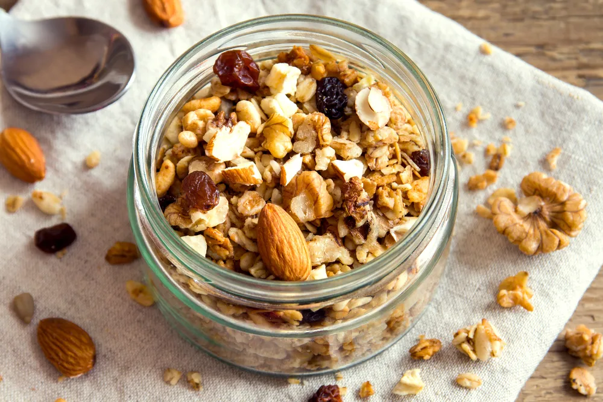

DIY A Healthier Granola

The granola of today is a sugar and trans fat-laden reminder of the granola of the past. At one time the breakfast staple was an excellent and pure source of whole grains and fiber. Sadly, it’s difficult to track down a current day, store-bought brand that’s not filled with refined sugars, artery-clogging fats, and chocolate (gasp!).
But who says you have to settle for store-bought granola when you can make a healthier, do it yourself version at home? Give your favorite breakfast cereal a much-needed nutritional makeover…
Choose Whole Grains
When it comes to healthy granola is—the healthiest start with whole grains and double up. By whole grains, I’m referring to foods that contain all of the naturally occurring nutrients of the grain seed (i.e., germ, bran, and endosperm). Even if the grain has been processed (i.e., rolled, cracked, or cooked), the food should retain the same nutrients as the entire grain seed.
Most granola’s typically start with rolled oats, but yours can feature other favorite whole grains as well—such as cracked wheat, puffed millet, corn, quinoa, amaranth, wild rice, brown rice, spelt, farro, bulgur, and kamut.
Go Nuts with Nuts
Most whole made granola recipes feature nuts for a triple purpose: taste, texture, and nutrient value. Using a healthy handful of raw nuts in your granola—such as slivered almonds, walnut pieces, pecans, and even pistachios—will ensure your first meal of the day includes a healthy protein as well as a healthy source of fat.
In addition, nuts in your granola will give your cereal great flavor and a crunchy, satisfying texture. Don’t forget that nuts also offer a great source of fiber (at roughly 4-grams per half cup of nuts).
Source Some Seeds
As far as seeds go, the plentiful possibilities are endless—with options like sunflower seeds, pumpkin seeds, and even sesame seeds for a healthy source of fat, fiber, and extra crunch. However, don’t overlook a trifecta of super-powered seeds in your granola recipe: chia, flax, and hemp seeds.
According to research from the University of California, Berkeley, chia, flax, and hemp seeds all offer sources of easily digestible protein, omega-3 fatty acids, proteins, and soluble fibers, which have been linked to lowering bad (LDL) cholesterol, optimizing bowel health, and warding off heart disease.
Host Heart-Healthy Oils
While a balanced blend of raw nuts and seeds will already give your homemade granola a heart-healthy boost of unsaturated fats—you’ll still need some oil to turn your dried oats golden and crunchy.
Rather than heart damaging hydrogenated oils (i.e., palm oils) used in most store-bought brands, turn to healthier, organic oil alternatives—such as coconut oil or extra virgin olive oil. Both are rich in heart-friendly monounsaturated fat.
Select Smart Sugars
Let’s face the facts; without a touch of sweetness, you wouldn’t touch this breakfast cereal! However, your source of sugar doesn’t need to be unhealthy, like high-fructose corn syrup.
Instead look to natural sugars—such as raw honey, real maple syrup, evaporated cane juice, brown rice syrup, and molasses. Also, beware of how much sugar you use as it can quickly add up. Stick to 8-grams of sugar per ½ cup serving for just a touch of sweetness.
Be Vigilant with Portions
According to Melissa O’Shea, Registered Dietitian and Director of Nutrition at Exhale Spa, keeping an eye on portion sizes is important. Granola should not be treated like cereal, it’s very filling and a small bowl (approximately a third of a cup in size) should be adequate and satisfying.
If you know you’re craving more than a small bowl of granola, bulk up your breakfast or snack by adding raw, sliced fruit (i.e., banana, peaches, and mango) and fresh berries. You can also add a dollop of Greek yogurt to boost creaminess and protein count.
Source: https://activebeat.com/diet-nutrition/diy-a-healthier-granola/